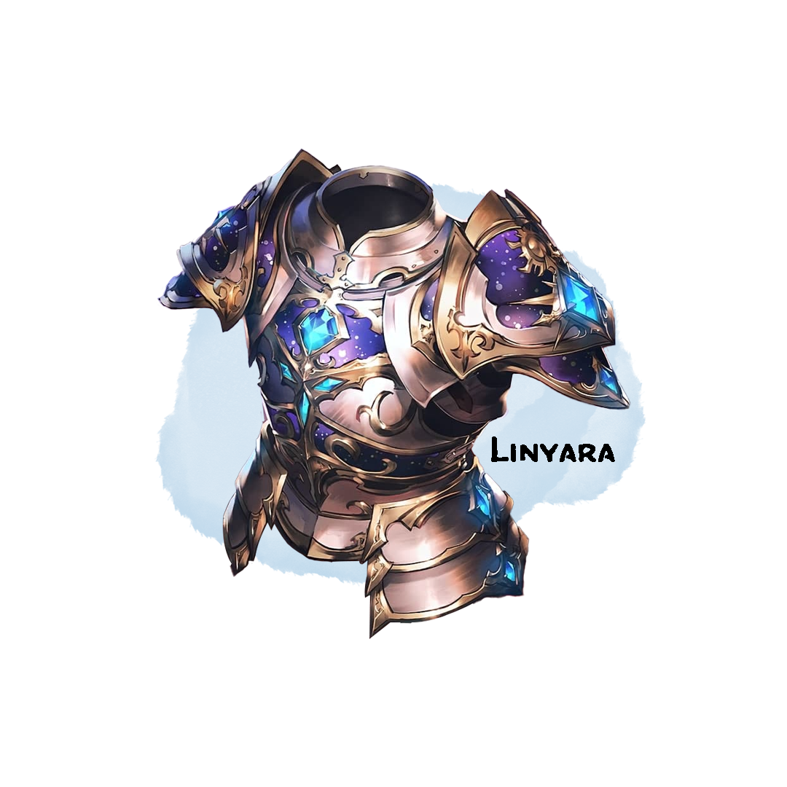

Linyara, Blessing of the Pantheon¶
Armor (Heavensteel), Artifact (requires attunement by Corvin Mornwalker)¶

Long ago, the many deities of the pantheon sought out an avatar to carry out their will on the mortal plane. Many were tested, but none could wield Linyara and command the deities' strength. The deities have long stopped searching, but hope that someday their champion will arrive.
Might of the Infusion¶
Linyara grants you a +1 bonus to AC and saving throws.
Forged in the Heavens¶
Heavensteel that has not been blessed by a deity has an AC of 16 and still incurs disadvantage on stealth checks. You need a strength of at least 16 to don this armor.
Divine Resilience¶
When you are subjected to a magical effect that allows you to make a Strength or Constitution saving throw to take only half damage, you instead take no damage if you succeed on the saving throw.
Faithful Grace¶
Everyday at dawn, you can offer a prayer to a greater deity. After completing your prayer, you receive a grace from that deity that lasts until the next dawn. Consult the following table for available deities and their graces.
| Deity | Grace |
|---|---|
| Avandra | Whenever you make a skill check, the number on the dice cannot be less than twice your proficiency bonus |
| Bahamut | When you cast smite, your armor absorbs some of the holy energy. Until you take a short or long rest, you may release that energy, using smite at 1st level. You may use this a number of times equal to your proficiency bonus per long rest. |
| Moradin | When you are hit by an attack, you may use your reaction to channel divine energy into your armor. You gain +3 AC for that attack only. You may use this a number of times equal to your proficiency bonus per long rest. |
| Pelor | Whenever you use Lay on Hands, you gain an amount of temporary hit points equal to the amount restored. |
| Erathis | You and enemies attacking you directly cannot have advantage or disadvantage on any attacks, saves, or skill checks. |
Divine Challenge¶
Once per long rest, you can challenge one target within 30 feet of you. When you do so, a 30ft radius sphere forms to contain both of you. Any other creatures are "safely" ejected (not clipped into walls/terrain, but could be placed above a cliff) from the area. You and the target cannot exit the zone or interact with creatures outside of it. Similarly no other creature can enter the zone or interact with you and your target. Any effects created by creatures other than you and the target inside the sphere are removed / dispelled. The challenge lasts for 5 rounds or until one of you dies.